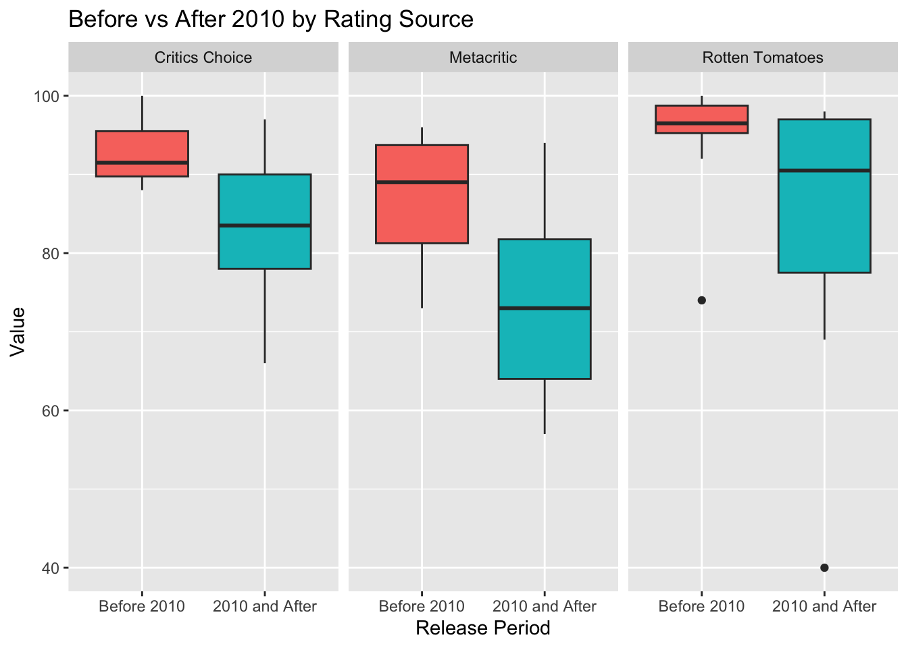

library(dplyr)
library(tidyverse)
library(pixarfilms)
pixar_films <- readr::read_csv('https://raw.githubusercontent.com/rfordatascience/tidytuesday/main/data/2025/2025-03-11/pixar_films.csv')
public_response <- readr::read_csv('https://raw.githubusercontent.com/rfordatascience/tidytuesday/main/data/2025/2025-03-11/public_response.csv')
pixar <-
public_response %>%
left_join(box_office, by = "film") %>%
left_join(pixar_films, by = "film") %>%
group_by(film) %>%
pivot_longer(cols = c("rotten_tomatoes", "metacritic", "critics_choice"),
names_to = "ratings",
values_to = "value") %>%
mutate(ratings = case_when(
ratings == "metacritic" ~ "Metacritic",
ratings == "rotten_tomatoes" ~ "Rotten Tomatoes",
ratings == "critics_choice" ~ "Critics Choice"
)) %>%
select(-cinema_score, - budget ) %>%
drop_na()%>%
mutate(avg_rating = mean(value)) %>%
mutate( period = if_else(release_date <= as.Date("2009-12-31"),"Before 2010","2010 and After"),
# I got some help from the web to transform the release date to organize films by year,
period = fct_relevel(period, c("Before 2010", "2010 and After")))%>%
arrange(desc(avg_rating))Introduction:
I am working with the Pixar film data set posted from TidyTuesday 2025-03-11. The data comes from the {pixarfilms} R package by Eric Luang. There are 23 observations in this data set. I am most interested in observing the differences in ratings between the main stream critics by Rotten Tomatoes, Meta Critics, and Critics Choice.
The variables I will be examining:
ratings: Name of rating source (Rotten Tomatoes, Meta Critics, and Critics Choice)
avg_rating: The average rating given on a particular movie by each of the three rating sources
value: The score out of a hundred given by Rotten Tomatoes, Meta Critics, and Critics Choice
period: Whether the movie was released before or after 2010
film: The title of the film
Loading the Data:
Graph #1
ggplot(data = pixar, aes(x =fct_reorder(film, avg_rating), y = value, col = ratings)) +
geom_point() +
geom_line(aes(group = ratings)) +
scale_color_viridis_d() +
labs(x = "Pixar film", y = "Rating value", title = "Ratings by Film") +
theme(axis.text.x = element_text(angle = 45, vjust = 0.5)) 
Interpretation:
This graph shows Pixar films ordered from lowest to highest average rating, with scores from Rotten Tomatoes, Metacritic, and Critics Choice plotted for each movie. While Rotten Tomatoes generally gives higher scores and Metacritic gives lower ones, all three sources move together across films. This indicates strong agreement among critics about which Pixar movies are better or worse, even if they use slightly different scoring standards.
Graph #2
ggplot(data = pixar, aes(y = value, x = ratings, color = ratings))+
geom_boxplot()+
scale_color_viridis_d() +
labs(x = "Ratings", y = "Value", color = "Ratings", title = "Distribution of Ratings by Source")+
theme(legend.position = "none")
Interpretation:
This boxplot compares the overall distribution of ratings from Critics Choice, Metacritic, and Rotten Tomatoes. Rotten Tomatoes has the highest median rating, suggesting it is the most generous source, while Metacritic has the lowest median and the widest spread, indicating stricter and more variable scoring. Critics Choice falls between the two in both typical score and variability. The presence of lower outlier Cars 2 with an average rating of approximately 55.
Graph #3
ggplot(pixar, aes(x = period, y = value, fill = period)) +
geom_boxplot() +
facet_wrap(~ ratings) +
labs(x = "Release Period", y = "Value", title = "Before vs After 2010 by Rating Source") +
theme(legend.position = "none")
Interpretation:
This graph compares ratings before and after 2010 separately for each rating source. For all three sources, the median rating is higher for films released before 2010, suggesting Pixar’s earlier movies were more consistently well received. The post-2010 period shows greater spread and lower minimum values, especially for Metacritic and Rotten Tomatoes. Overall, this indicates that more recent Pixar films have had more mixed and less consistently strong critical reception.
Stat 334 Connection:
These visualizations are effective because they use they rely on different graphs using position, grouping, and faceting to make differences across rating sources and time periods easy to see. The visuals eliminate clutter, and focus attention as appropriate to answer my question of interest: What are the differences in ratings between the main stream critics by Rotten Tomatoes, Meta Critics, and Critics Choice.
Conclusion:
Across these visualizations, all three rating sources show a similar pattern from movie to movie. However, Rotten Tomatoes consistently rates higher scores, while Metacritic tends to rate the same films more conservatively. This suggests that although the sources differ in their scoring standards, they largely agree on which movies are better or worse.
One limitation of this analysis is that it is based on only 23 Pixar films, which means individual movies and outliers can have a large influence on the patterns we observe. The data also only three critic sources even though they each use different scoring standards. In addition, the graphs only show the differences but cannot describe why the differences occur. If I could do this again I would find a data set of all animated movies to see how the different rating sources grade for different companies.